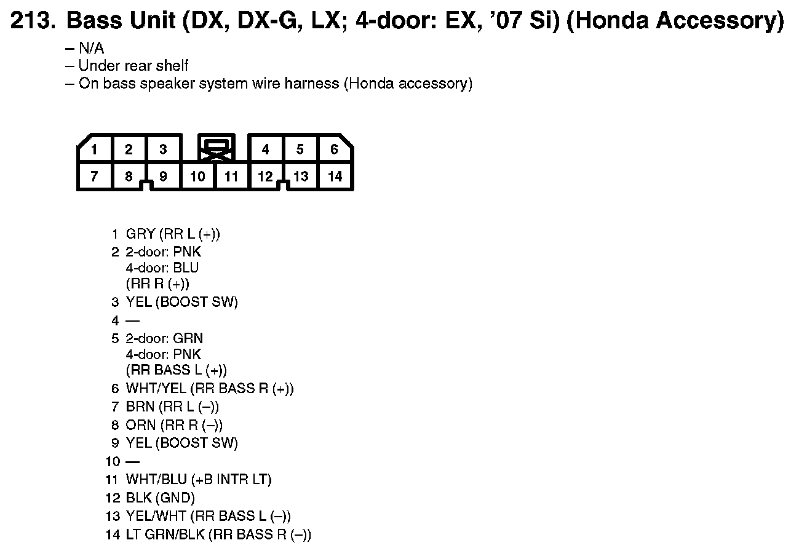
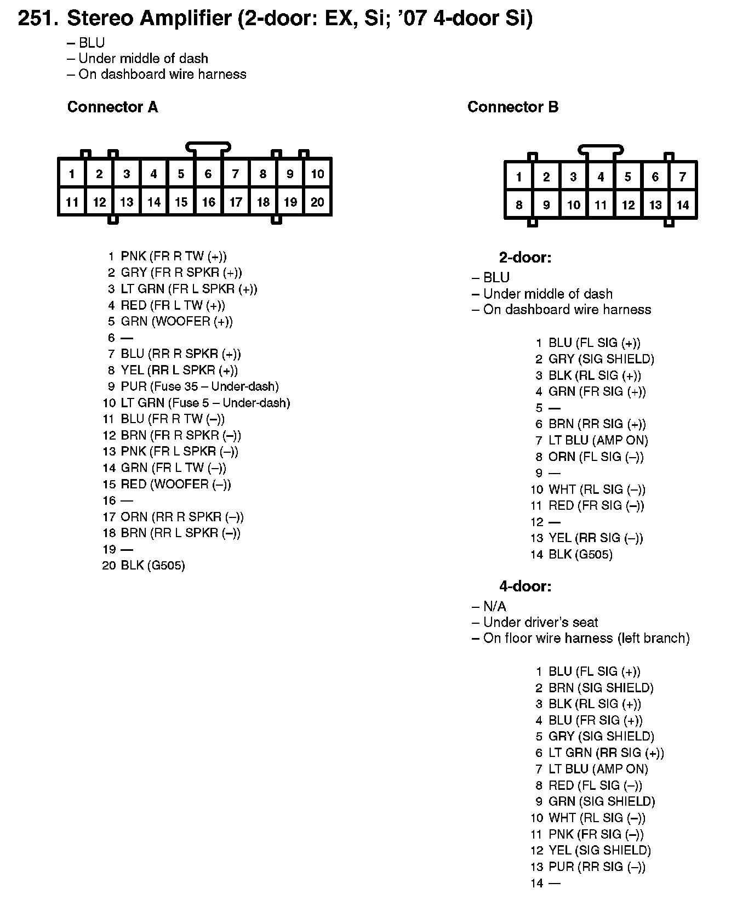
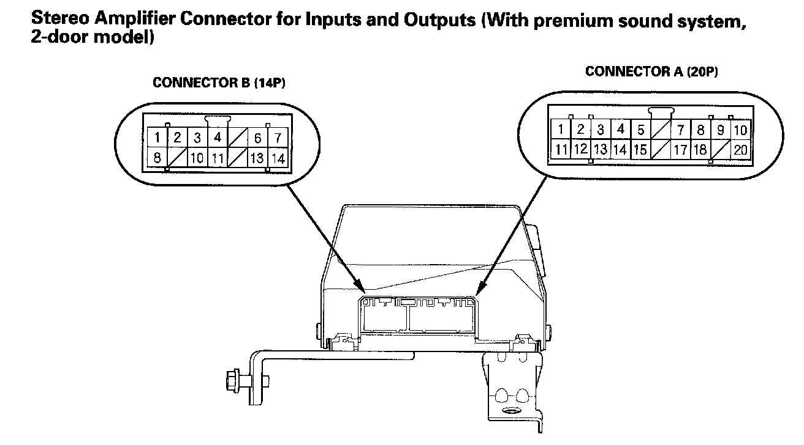
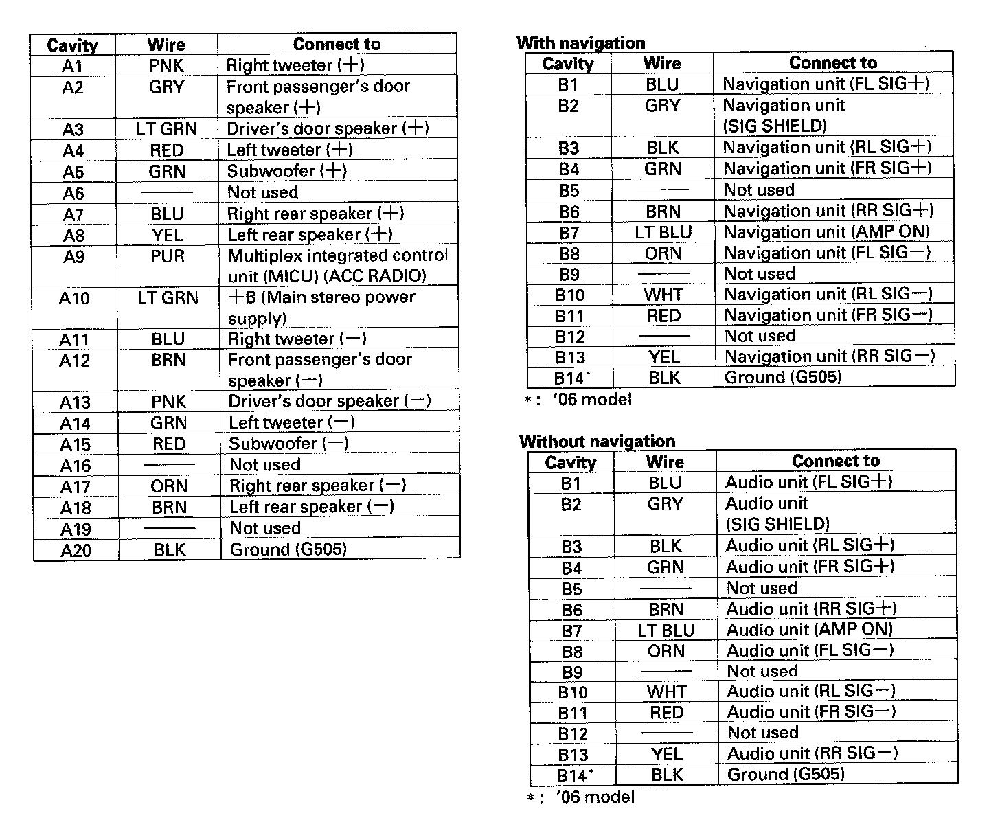
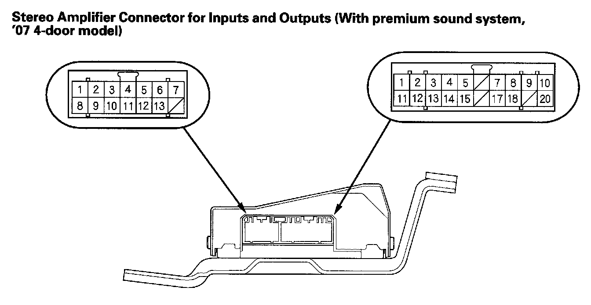
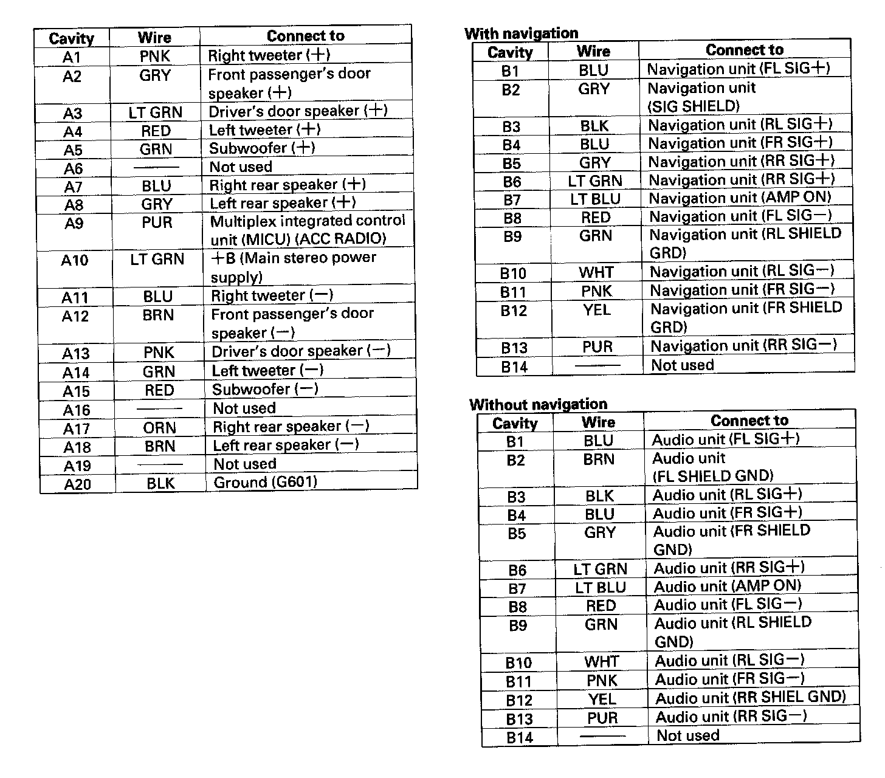

Amplifier, Sound System
213. Bass Unit (DX, DX-G, LX; 4-door: EX, '07 Si) (Honda Accessory):

251. Stereo Amplifier (2-door: EX, Si; '07 4-door Si):

Stereo Amplifier Connector For Inputs And Outputs (with Premium Sound System, 2-door Model):

Stereo Amplifier Connector For Inputs And Outputs (with Premium Sound System, 2-door Model):

Stereo Amplifier Connector For Inputs And Outputs (with Premium Sound System, '07 4-door Model):

Stereo Amplifier Connector For Inputs And Outputs (with Premium Sound System, '07 4-door Model):
